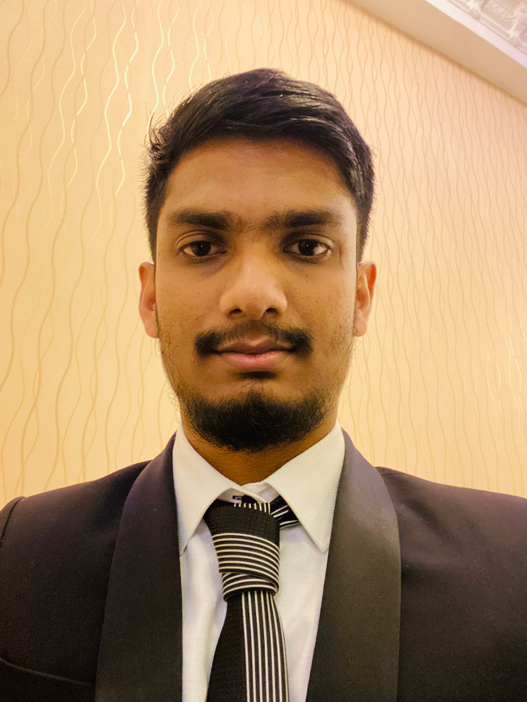

|  |
Nipun WegapitiyaBachelor of Technology (Hons in Engineering), (Under Graduate) Specialized field: Computer Engineering The Open University of Sri Lanka (OUSL) CAREER OBJECTIVE I am seeking opportunities to join a company that can help me in enhancing my skills, and knowledge and realize my potential. I am willing to explore a wide variety of working experiences in the software industry that can help me gain perspective. |
| Full Name | : Nipun Thanuja Wegapitiya |
| Date of Birth | : 1994.03.03 |
| National Identity Card | : 940631564V |
Personal Website
LinkedIn :Nipun Wegapitiya
GitHub :Nipun Wegapitiya
| DATE | ORGANIZATION | FIELD OF SPECIALIZATION | JOB DESCRIPTION |
| 2021 | National Engineering Research and Development Centre | Electronic | Industrial Training |
|
|